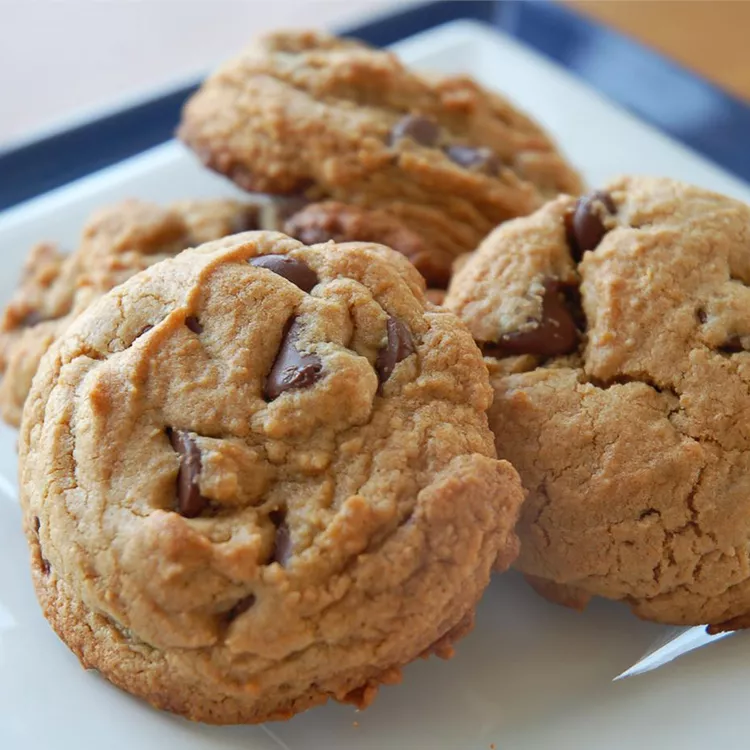

Chewy Peanut Butter Chocolate Chip Cookies

a fantastic snack for all the cookie and peanut butter lovers out there.
Ingredients:
- 1 cup of brown sugar
- 1/2 cup of white sugar
- 1/2 cup of butter (softened)
- 1/2 cup of peanut butter
- 2 eggs
- 2 tablespoons of light corn syrup
- 2 tablespoons of water
- 2 teaspoons of vanilla extract
- 2(1/2) cups of all-purpose flour
- 1 teaspoon of baking soda
- 1/2 teaspoon of salt
- 2 cups of chopped semisweet chocolate
Steps:
- Preheat the oven to 375 degrees F (190 degrees C).
-
Cream sugars, butter, and peanut butter in a large bowl until smooth. Beat in
eggs one at a time, then stir in corn syrup, water, and vanilla. Combine flour,
baking soda, and salt in a separate bowl, stir into peanut butter mixture. Fold in
chocolate chunks.
- Scoop 1/4-cup portions of dough 3-inches apart onto un greased baking sheets.
-
Bake in the preheated oven until edges are golden, 12 - 14 minutes. Allow cookies to
cool for 1 minutes before transferring to wire racks.
return to all recipes